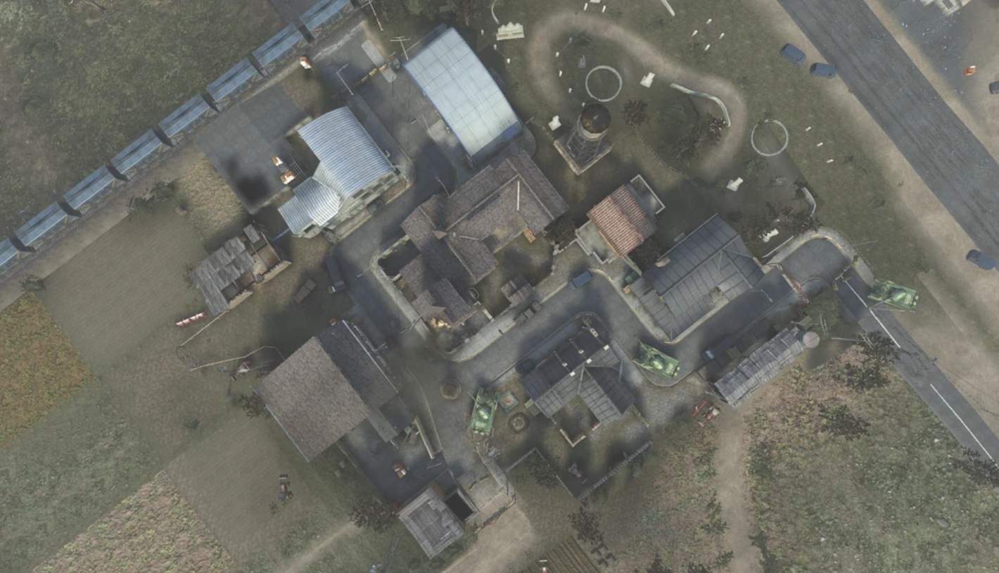
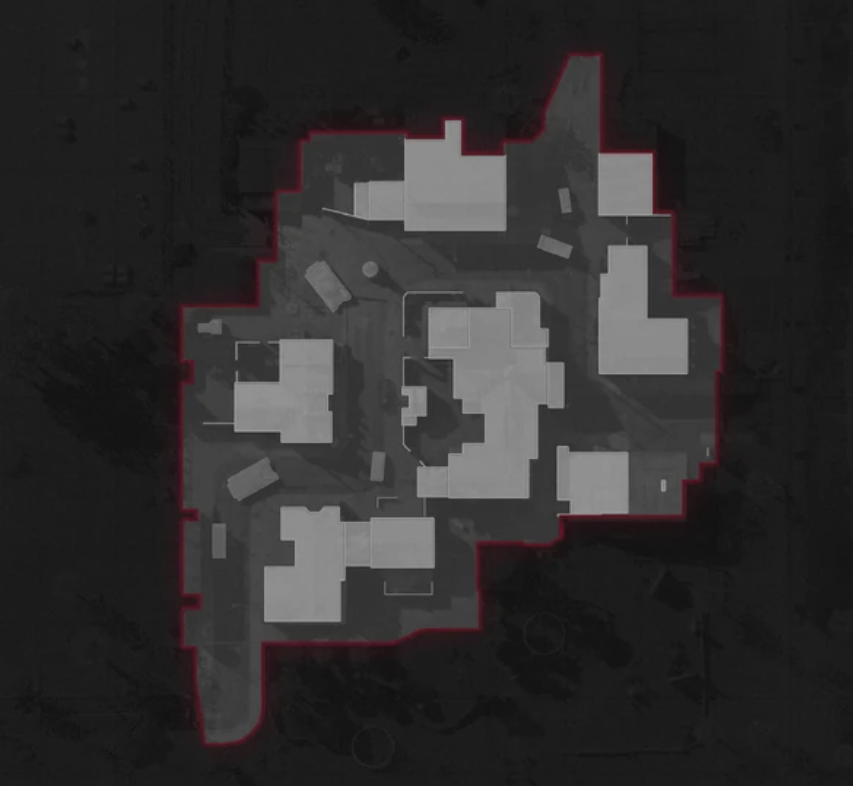

El mapa se basa en una pequeña ciudad fronteriza entre China y Kirguistán. Contiene varios lugares para el combate de largo alcance y para francotiradores, como los niveles del segundo piso de los edificios cerca de los objetivos de Domino A y C, que se enfrentan directamente entre sí y pasan por alto el objetivo B. Standoff también ofrece huecos y caminos que pueden ofrecer cobertura para escapar durante el juego.
Se pueden ver varios tanques SDC en toda la ciudad debido a que Kirguistán es miembro de la Coalición de Defensa Estratégica, lo que indica que acaba de tener lugar una batalla allí. Muchas de las tiendas y edificios tienen carteles escritos en ruso.
El centro cercano de la ciudad tiene un monumento junto a un tanque SDC, este monumento representa una figura histórica de origen kirguís. El monumento también tiene una hoz y un martillo, lo que da más información sobre cuándo se construyó el monumento, en algún momento durante la historia de Kirguistán como república de la antigua Unión Soviética.
 